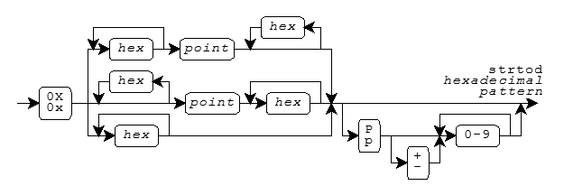
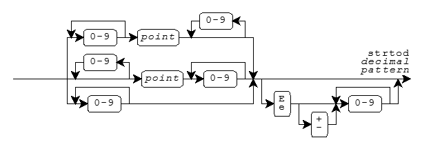

<stdlib.h>EXIT_FAILURE
· EXIT_SUCCESS
· MB_CUR_MAX
· NULL
· RAND_MAX
abort
· abs
· atexit
· atof
· atoi
· atol
· atoll
· bsearch
· calloc
· div
· div_t
· _Exit
· exit
· free
· getenv
· labs
· llabs
· ldiv
· ldiv_t
· ldiv
· ldiv_t
· malloc
· mblen
· mbstowcs
· mbtowc
· qsort
· rand
· realloc
· size_t
· srand
· strtod
· strtof
· strtol
· strtold
· strtoll
· strtoul
· strtoull
· system
· wchar_t
· wcstombs
· wctomb
abort_handler_s
· bsearch_s
· constraint_handler_t
· errno_t
· getenv_s
· ignore_handler_s
· mbstowcs_s
· qsort_s
· rsize_t
· set_constraint_handler_s
· wcstombs_s
· wctomb_s
Include the standard header <stdlib.h> to declare an
assortment of useful functions and to define the macros and types
that help you use them.
/* MACROS */
#define EXIT_FAILURE <rvalue integer expression>
#define EXIT_SUCCESS <rvalue integer expression>
#define MB_CUR_MAX <rvalue integer expression >= 1>
#define NULL <either 0, 0L, or (void *)0> [0 in C++]
#define RAND_MAX <integer constant expression >= 32,767>
/* TYPES */
typedef struct {
int quot, rem;
} div_t;
typedef struct {
long quot, rem;
} ldiv_t;
typedef struct { [added with C99]
long long quot, rem;
} lldiv_t;
typedef ui-type size_t;
typedef i-type wchar_t; [keyword in C++]
/* FUNCTIONS */
int abs(int i);
long abs(long i); [C++ only]
long long abs(long long i); [C++ only, added with C99]
long long llabs(long long i); [added with C99]
long labs(long i);
div_t div(int numer, int denom);
ldiv_t div(long numer, long denom); [C++ only]
lldiv_t div(long long numer, long long denom); [C++ only, added with C99]
lldiv_t lldiv(long long numer, long long denom); [added with C99]
ldiv_t ldiv(long numer, long denom);
int rand(void);
void srand(unsigned int seed);
double atof(const char *s);
int atoi(const char *s);
long atol(const char *s);
long long atoll(const char *s); [added with C99]
double strtod(const char *restrict s, char **restrict endptr);
float strtof(const char *restrict s, char **restrict endptr); [added with C99]
long double strtold(const char *restrict s,
char **restrict endptr); [added with C99]
long long strtoll(const char *restrict s, char **restrict endptr,
int base); [added with C99]
unsigned long long strtoull(const char *restrict s, char **restrict endptr,
int base); [added with C99]
long strtol(const char *restrict s, char **restrict endptr, int base);
unsigned long strtoul(const char *restrict s, char **restrict endptr,
int base);
void *calloc(size_t nelem, size_t size);
void free(void *ptr);
void *malloc(size_t size);
void *realloc(void *ptr, size_t size);
int mblen(const char *s, size_t n);
size_t mbstowcs(wchar_t *restrict wcs, const char *restrict s, size_t n);
int mbtowc(wchar_t *restrict pwc, const char *restrict s, size_t n);
size_t wcstombs(char *restrict s, const wchar_t *restrict wcs, size_t n);
int wctomb(char *s, wchar_t wchar);
void _Exit(int status); [added with C99]
void exit(int status);
void abort(void);
char *getenv(const char *name);
int system(const char *s);
extern "C++"
void *bsearch(const void *key, const void *base,
size_t nelem, size_t size,
int (*cmp)(const void *ck, const void *ce)); [C++ only]
extern "C" [C++ only]
void *bsearch(const void *key, const void *base,
size_t nelem, size_t size,
int (*cmp)(const void *ck, const void *ce));
extern "C++"
void qsort(void *base, size_t nelem, size_t size,
int (*cmp)(const void *e1, const void *e2)); [C++ only]
extern "C" [C++ only]
void qsort(void *base, size_t nelem, size_t size,
int (*cmp)(const void *e1, const void *e2));
#if __STDC_WANT_LIB_EXT1__ [added with TR24731]
typedef void (*constraint_handler_t)(const char *restrict s,
void *restrict p, errno_t errcode);
typedef int errno_t;
typedef size_t rsize_t;
constraint_handler_t set_constraint_handler_s(
constraint_handler_t new_hand);
void abort_handler_s(const char *restrict s,
void *restrict p, errno_t errcode);
void ignore_handler_s(const char *restrict s,
void *restrict p, errno_t errcode);
errno_t getenv_s(size_t *restrict needed, char *restrict s,
rsize_t maxsize, const char *restrict name);
errno_t wctomb_s(int *restrict pstat,
char *restrict s, rsize_t maxsize, wchar_t wchar);
errno_t mbstowcs_s(size_t *restrict psize,
wchar_t *restrict wcs, rsize_t maxsize,
const char *restrict s, rsize_t n);
errno_t wcstombs_s(size_t *restrict psize,
char *restrict s, rsize_t maxsize,
const wchar_t *restrict wcs, rsize_t n);
extern "C++"
void *bsearch_s(const void *key, const void *base,
rsize_t nelem, rsize_t size,
int (*cmp)(const void *ck, const void *ce,
void *context); [C++ only]
extern "C" [C++ only]
void *bsearch_s(const void *key, const void *base,
rsize_t nelem, rsize_t size,
int (*cmp)(const void *ck, const void *ce,
void *context);
extern "C++"
void qsort_s(void *base, rsize_t nelem, rsize_t size,
int (*cmp)(const void *e1, const void *e2,
void *context), [C++ only]
extern "C" [C++ only]
void qsort_s(void *base, rsize_t nelem, rsize_t size,
int (*cmp)(const void *e1, const void *e2,
void *context);
#endif /* __STDC_WANT_LIB_EXT1__ */
abortvoid abort(void);
The function calls
raise(SIGABRT),
which reports the abort signal,
SIGABRT.
Default handling for the abort signal is to cause abnormal
program termination and report unsuccessful termination to the target
environment. Whether or not the target environment flushes output
streams, closes open files, or removes temporary files on abnormal
termination is implementation defined. If you specify handling that causes
raise
to return control to abort, the function calls
exit(EXIT_FAILURE),
to report unsuccessful termination with
EXIT_FAILURE.
abort never returns to its caller.
abort_handler_svoid abort_handler_s(const char *s, void *p,
errno_t errcode); [added with TR24731]
The function
writes mesg to the standard error stream and calls
abort.
It can serve as a
constraint handler.
absint abs(int i); long abs(long i); [C++ only] long long abs(long long i); [C++ only, added with C99]
The function returns the absolute value of
i, |i|. The version that accepts
a long argument behaves the same as
labs
atexitextern "C++"
int atexit(void (*func)(void)); [C++ only]
extern "C" [C++ only]
int atexit(void (*func)(void));
The function registers the function whose address is func
to be called by
exit (or when
main returns)
and returns zero if successful.
The functions are called in reverse order of registry. You can register at
least 32 functions.
Furthermore, in C++, if control leaves a called function because
it fails to handle a thrown exception, terminate
is called.
The function is thread safe.
atofdouble atof(const char *s);
The function converts the initial characters of the string s
to an equivalent value x of type double and then returns
x. The conversion is the same as for
strtod(s, 0),
except that a value is not necessarily stored in
errno
if a conversion error occurs.
atoiint atoi(const char *s);
The function converts the initial characters of the string s
to an equivalent value x of type int and then returns
x. The conversion is the same as for
(int)strtol(s, 0, 10),
except that a value is not necessarily stored in
errno
if a conversion error occurs.
atollong atol(const char *s);
The function converts the initial characters of the string s
to an equivalent value x of type long and then returns
x. The conversion is the same as for
strtol(s, 0, 10),
except that a value is not necessarily stored in
errno
if a conversion error occurs.
atolllong long atoll(const char *s); [added with C99]
The function converts the initial characters of the string s
to an equivalent value x of type long long and then returns
x. The conversion is the same as for
strtoll(s, 0, 10),
except that a value is not necessarily stored in
errno
if a conversion error occurs.
bsearchextern "C++"
void *bsearch(const void *key, const void *base,
size_t nelem, size_t size,
int (*cmp)(const void *ck, const void *ce)); [C++ only]
extern "C" [C++ only]
void *bsearch(const void *key, const void *base,
size_t nelem, size_t size,
int (*cmp)(const void *ck, const void *ce));
The function searches an array of ordered values and returns
the address of an array element that equals the search key key
(if one exists); otherwise, it returns a null pointer. The array consists
of nelem elements, each of size bytes,
beginning with the element whose address is base.
bsearch calls the comparison function whose address is
cmp to compare the search key with elements of the array. The
comparison function must return:
ck is less than the
array element ce
bsearch assumes that the array elements are in nondescending
order according to the same comparison rules that are used by the
comparison function.
bsearch_sextern "C++"
void *bsearch_s(const void *key, const void *base,
rsize_t nelem, rsize_t size,
int (*cmp)(const void *ck, const void *ce,
void *context); [C++ only]
extern "C" [C++ only]
void *bsearch_s(const void *key, const void *base,
rsize_t nelem, rsize_t size,
int (*cmp)(const void *ck, const void *ce,
void *context); [added with TR24731]
A runtime constraint violation occurs if:
nelem is greater than
RSIZE_MAXsize is greater than
RSIZE_MAXnelem is nonzero and key is a null pointernelem is nonzero and base is a null pointernelem is nonzero and cmp is a null pointerIf such a violation occurs, the function returns a null pointer.
Otherwise, the function searches an array of ordered values and returns
the address of an array element that equals the search key key
(if one exists); otherwise, it returns a null pointer. The array consists
of nelem elements, each of size bytes,
beginning with the element whose address is base.
bsearch calls the comparison function whose address is
cmp to compare the search key with elements of the array,
passing context as the third argument.
The comparison function must return:
ck is less than the
array element ce
bsearch assumes that the array elements are in nondescending
order according to the same comparison rules that are used by the
comparison function.
callocvoid *calloc(size_t nelem, size_t size);
The function allocates an array object containing nelem
elements each of size size, stores zeros in all bytes of the
array, and returns the address of the first element of the array if
successful; otherwise, it returns a null pointer. You can safely convert
the return value to an object pointer of any type whose size in bytes
is not greater than size.
constraint_handler_ttypedef void (*constraint_handler_t(const char *restrict s,
void *restrict p, errno_t errcode); [added with TR24731]
The type describes a pointer to a function suitable for use as a constraint handler.
divdiv_t div(int numer, int denom); ldiv_t div(long numer, long denom); [C++ only] lldiv_t div(long long numer, long long denom); [C++ only, added with C99]
The function divides numer by denom and returns
both quotient and remainder in the structure
result x, if the quotient can be represented.
The structure member x.quot
is the algebraic quotient truncated toward zero.
The structure member x.rem is the remainder, such
that numer == x.quot*denom + x.rem.
div_ttypedef struct {
int quot, rem;
} div_t;
The type is the structure type returned by the function
div.
The structure contains members that represent the quotient
(quot) and remainder (rem)
of a signed integer division with operands of type int. The
members shown above can occur in either order.
errno_ttypedef int errno_t; [added with TR24731]
The type is a synonym for int, used to represent
a value that can be stored in
errno.
exitvoid exit(int status);
The function calls all functions registered by
atexit,
closes all files, and returns control to the target environment. If
status is zero or
EXIT_SUCCESS,
the program reports successful termination. If status is
EXIT_FAILURE, the
program reports unsuccessful termination. An implementation can define
additional values for status.
exit never returns to its caller.
_Exitvoid _Exit(int status); [added with C99]
The function returns control to the target environment. The value of
status has the same effect as for a call to
exit. The function does not
call functions registered by
atexit. It may or may not
close files.
_Exit never returns to its caller.
EXIT_FAILURE#define EXIT_FAILURE <rvalue integer expression>
The macro yields the value of the status argument to
exit
that reports unsuccessful termination.
EXIT_SUCCESS#define EXIT_SUCCESS <rvalue integer expression>
The macro yields the value of the status argument to
exit
that reports successful termination.
freevoid free(void *ptr);
If ptr is not a null pointer, the function deallocates
the object whose address is ptr; otherwise, it does nothing.
You can deallocate only objects that you first allocate by calling
calloc,
malloc, or
realloc.
getenvchar *getenv(const char *name);
The function searches an
environment list,
which each implementation defines, for an entry
whose name matches the string name. If
the function finds a match, it returns a pointer to a static-duration
object that holds the definition associated with the target environment
name. Otherwise, it returns a null pointer. Do not alter the value
stored in the object. If you call getenv again, the value stored
in the object can change. No target environment names are required
of all environments.
The function is thread safe.
getenv_s
errno_t getenv_s(size_t *restrict needed, char *restrict s,
rsize_t maxsize, const char *restrict name); [added with TR24731]
A runtime constraint violation occurs if:
s is a null pointermaxsize is zero or greater than
RSIZE_MAXname is a null pointerIf such a violation occurs, and needed is not a null
pointer, the function stores zero in *len.
It then returns the error code
it reported to the constraint handler.
Otherwise, the function searches the
environment list for an entry
whose name matches the string name. If
the function finds a match:
needed is not a null pointer, the function stores
in *len the length of the null-terminated definition
associated with the target environment namemaxsize, the function
copies the definition to s and returns zero
maxsize, the function
stores a null character in s[0] and returns a nonzero valueIf the function does not find a match:
needed is not a null pointer, the function stores
zero in *lens[0]
and returns a nonzero valueignore_handler_svoid ignore_handler_s(const char *s, void *p,
errno_t errcode); [added with TR24731]
The function simply returns. It can serve as a constraint handler.
labslong labs(long i);
The function returns the absolute value of i,
|i|, the same as
abs.
llabslong long llabs(long long i); [added with C99]
The function returns the absolute value of i,
|i|, the same as
abs.
ldivldiv_t ldiv(long numer, long denom);
The function divides numer by denom and returns
both quotient and remainder in the structure
result x, if the quotient can be represented.
The structure member x.quot
is the algebraic quotient truncated toward zero.
The structure member x.rem is the remainder, such
that numer == x.quot*denom + x.rem.
lldivlldiv_t lldiv(long long numer, long long denom); [added with C99]
The function divides numer by denom and returns
both quotient and remainder in the structure
result x, if the quotient can be represented.
The structure member x.quot
is the algebraic quotient truncated toward zero.
The structure member x.rem is the remainder, such
that numer == x.quot*denom + x.rem.
ldiv_ttypedef struct {
long quot, rem;
} ldiv_t;
The type is the structure type returned by the function
ldiv.
The structure contains members that represent the quotient
(quot) and remainder (rem)
of a signed integer division with operands of type long. The
members shown above can occur in either order.
lldiv_ttypedef struct { [added with C99]
long long quot, rem;
} lldiv_t;
The type is the structure type returned by the function
lldiv.
The structure contains members that represent the quotient
(quot) and remainder (rem)
of a signed integer division with operands of type long long. The
members shown above can occur in either order.
mallocvoid *malloc(size_t size);
The function allocates an object of size size, and returns
the address of the object if successful; otherwise, it returns a null
pointer. The values stored in the object are indeterminate. You can
safely convert the return value to an object pointer of any type whose
size is not greater than size.
MB_CUR_MAX#define MB_CUR_MAX <rvalue integer expression >= 1>
The macro yields the maximum number of characters that constitute a
multibyte character
in the current
locale. Its value is <=
MB_LEN_MAX.
mblenint mblen(const char *s, size_t n);
If s is not a null pointer, the function returns the
number of bytes in the multibyte string s that constitute the
next multibyte character, or it returns -1 if the next n
(or the remaining) bytes do not constitute a valid multibyte character.
mblen does not include the terminating null in the count of
bytes. The function can use a
conversion state
stored in an internal
static-duration object to determine how
to interpret the multibyte string.
If s is a null pointer and if multibyte characters have a
state-dependent encoding
in the current
locale, the function stores the
initial conversion state
in its internal static-duration object and
returns nonzero; otherwise, it returns zero.
mbstowcssize_t mbstowcs(wchar_t *restrict wcs, const char *restrict s, size_t n);
The function stores a wide character string, in successive elements
of the array whose first element has the address wcs,
by converting, in turn, each of the multibyte characters
in the multibyte string s.
The string begins in the
initial conversion state.
The function converts each character as if by calling
mbtowc (except that
the internal conversion state stored for that function is unaffected).
It stores at most n wide characters, stopping after it stores
a null wide character. It returns the number of wide characters it
stores, not counting the null wide character, if all conversions are
successful; otherwise, it returns -1.
mbstowcs_serrno_t mbstowcs_s(size_t *restrict psize,
wchar_t *restrict wcs, rsize_t maxsize,
const char *restrict s, rsize_t n); [added with TR24731]
A runtime constraint violation occurs if:
wcs is not a null pointer and maxsize
is zero or greater than
RSIZE_MAXwcs is a null pointer and maxsize is nonzeropsize is a null pointers is a null pointerwcs is not a null pointer and n is greater than
RSIZE_MAXwcs is not a null pointer and the wide-character sequence
generated by the function does not end with a null wide character within
the first maxsize elementsIf such a violation occurs, other than the first one, and wcs
is not a null pointer, the function
stores a null wide character at wcs[0]].
If psize is not a null pointer, the function stores
(rsize_t)-1 in *psize.
It returns the error code it reported to the constraint handler.
Otherwise, the function stores a wide character string, in successive elements
of the array whose first element has the address wcs,
by converting, in turn, each of the multibyte characters
in the multibyte string s.
The string begins in the
initial conversion state.
The function converts each character as if by calling
mbtowc (except that
the internal conversion state stored for that function is unaffected).
It stores at most maxsize wide characters, stopping after it stores
a null wide character. If the conversion stores no null wide character,
and stores less than maxsize wide characters, the function
stores a null wide character at the end of the converted wide characters.
The function stores at *psize the number of converted
wide characters, not counting any terminating null wide character.
It returns zero if all conversions are
successful; otherwise, it returns a nonzero value.
mbtowcint mbtowc(wchar_t *restrict pwc, const char *restrict s, size_t n);
If s is not a null pointer,
the function determines x,
the number of bytes in the multibyte string s that constitute
the next multibyte character.
(x cannot be greater than
MB_CUR_MAX.)
If pwc is not a null pointer, the function converts the next
multibyte character to its corresponding wide-character value and
stores that value in *pwc.
It then returns x, or it
returns -1 if the next n or the remaining bytes do not
constitute a valid multibyte character. mbtowc does not include
the terminating null character in the count of bytes. The function can use a
conversion state
stored in an internal static-duration object to determine
how to interpret the multibyte string.
If s is a null pointer and if multibyte characters have a
state-dependent encoding
in the current
locale, the function stores the
initial conversion state
in its internal static-duration object and
returns nonzero; otherwise, it returns zero.
The function is not necessarily thread safe.
NULL#define NULL <either 0, 0L, or (void *)0> [0 in C++]
The macro yields a null pointer constant that is usable as an address constant expression.
qsortextern "C++"
void qsort(void *base, size_t nelem, size_t size,
int (*cmp)(const void *e1, const void *e2)); [C++ only]
extern "C" [C++ only]
void qsort(void *base, size_t nelem, size_t size,
int (*cmp)(const void *e1, const void *e2));
The function sorts, in place, an array consisting of nelem
elements, each of size bytes, beginning with the element whose
address is base. It calls the comparison function whose address
is cmp to compare pairs of elements. The comparison function
must return a negative value if e1 is less than e2,
zero if the two are equal, or a positive value if e1 is greater
than e2. Two array elements that are equal can appear in the
sorted array in either order.
qsort_sextern "C++"
void qsort_s(void *base, rsize_t nelem, rsize_t size,
int (*cmp)(const void *e1, const void *e2,
void *context); [C++ only]
extern "C" [C++ only]
void qsort_s(void *base, rsize_t nelem, rsize_t size,
int (*cmp)(const void *e1, const void *e2,
void *context); [added with TR24731]
A runtime constraint violation occurs if:
nelem is greater than
RSIZE_MAXsize is greater than
RSIZE_MAXnelem is nonzero and base is a null pointernelem is nonzero and cmp is a null pointerIf such a violation occurs, the function does nothing.
Otherwise, the function sorts, in place, an array consisting of nelem
elements, each of size bytes, beginning with the element whose
address is base. It calls the comparison function whose address
is cmp to compare pairs of elements,
passing context as the third argument. The comparison function
must return a negative value if e1 is less than e2,
zero if the two are equal, or a positive value if e1 is greater
than e2. Two array elements that are equal can appear in the
sorted array in either order.
randint rand(void);
The function computes a pseudo-random number x based
on a seed value stored in an internal static-duration object, alters
the stored seed value, and returns x.
x is in the interval [0,
RAND_MAX].
The function is not necessarily thread safe.
RAND_MAX#define RAND_MAX <integer constant expression >= 32,767>
The macro yields the maximum value returned by
rand.
reallocvoid *realloc(void *ptr, size_t size);
The function allocates an object of size size, possibly
obtaining initial stored values from the object
whose address is ptr.
It returns the address of the new object if successful; otherwise,
it returns a null pointer. You can safely convert the return value
to an object pointer of any type
whose size is not greater than size.
If ptr is not a null pointer, it must be the address
of an existing object that you first allocate by calling
calloc,
malloc, or
realloc. If the existing object is not larger
than the newly allocated object, realloc copies the entire
existing object to the initial part of the allocated object. (The
values stored in the remainder of the object are indeterminate.) Otherwise,
the function copies only the initial part of the existing object that
fits in the allocated object. If realloc succeeds in allocating
a new object, it deallocates the existing object. Otherwise, the existing
object is left unchanged.
If ptr is a null pointer, the function does not store
initial values in the newly created object.
rsize_ttypedef size_t rsize_t; [added with TR24731]
The type is a synonym for size_t,
used to represent a function argument to be checked on entry
to a function. It is a
runtime constraint violation
for an argument of type rsize_t to be greater than
RSIZE_MAX.
set_constraint_handler_sconstraint_handler_t set_constraint_handler_s(
constraint_handler_t new_hand); [added with TR24731]
The function sets the pointer to the current
constraint handler
to new_hand and returns the previous pointer.
size_ttypedef ui-type size_t;
The type is the unsigned integer type ui-type
of an object that you declare to store the result of the
sizeof operator.
srandvoid srand(unsigned int seed);
The function stores the seed value seed
in a static-duration object that
rand
uses to compute a pseudo-random number. From a given seed value,
that function always generates the same sequence of return
values. The program behaves as if the target environment calls
srand(1) at program startup.
strtoddouble strtod(const char *restrict s, char **restrict endptr);
The function converts the initial characters of the string s
to an equivalent value x of type double.
If endptr is not a null pointer,
the function stores a pointer to the unconverted
remainder of the string in *endptr. The function then returns
x.
The initial characters of the string s must consist of
zero or more characters for which
isspace returns nonzero,
followed by the longest sequence of one or more characters that match
any part of the full pattern for strtod shown in the diagram.
Boldface indicates a feature added with C99.
Here, inf is the sequence of characters inf
or infinity with individual letters in either case,
to represent the special value infinity. Similarly, nan
is the sequence of characters nan or nan(qualifier)
with individual letters in either case, to represent the
special value not-a-number (NaN). A qualifier is any sequence
of zero or more letters, digits, and underscores. Each implementation defines
what effect, if any, a qualifier has on the actual encoding
of a NaN.
The pattern for a strtod hexadecimal string
is shown in the diagram.

Here, hex is a hexadecimal digit, in either case, and
a point is the
decimal-point
character for the current
locale.
(It is the dot (.) in the
"C" locale.)
If the string s matches this pattern, its equivalent value
is the hexadecimal integer represented by any digits to the left of the
point, plus the hexadecimal fraction
represented by any digits to the right of the point,
times 2 raised to the signed decimal integer power
that follows an optional p or P. A leading
minus sign negates the value.
The pattern for a strtod
decimal string is shown in the diagram.

Here, a point is the
decimal-point
character for the current
locale.
(It is the dot (.) in the
"C" locale.)
If the string s matches this pattern, its equivalent value
is the decimal integer represented by any digits to the left of the
point, plus the decimal fraction
represented by any digits to the right of the point,
times 10 raised to the signed decimal integer power
that follows an optional e or E. A leading
minus sign negates the value.
In locales other than the
"C" locale,
strtod can define additional patterns as well.
If the string s does not match a valid pattern, the value
stored in *endptr is s,
and x is zero. If a
range error occurs,
strtod behaves exactly as the functions declared in
<math.h>.
strtoffloat strtof(const char *restrict s, char **restrict endptr); [added with C99]
The function converts the initial characters of the string s
to an equivalent value x of type float.
If endptr is not a null pointer,
the function stores a pointer to the unconverted
remainder of the string in *endptr. The function then returns
x. strtof converts strings exactly as does
strtod.
If the string s does not match a valid pattern, the value
stored in *endptr is s,
and x is zero. If a
range error occurs,
strtod behaves exactly as the functions declared in
<math.h>.
strtollong strtol(const char *restrict s, char **restrict endptr,
int base);
The function converts the initial characters of the string s
to an equivalent value x of type long.
If endptr is not a null pointer,
it stores a pointer to the unconverted remainder
of the string in *endptr.
The function then returns x.
The initial characters of the string s must consist of
zero or more characters for which
isspace returns nonzero,
followed by the longest sequence of one or more characters that match
the pattern for strtol shown in the diagram.

The function accepts the sequences
0x or 0X only
when base equals zero or 16.
The letters a-z or A-Z
represent digits in the range [10, 36).
If base is in the range
[2, 36], the function accepts only digits
with values less than base.
If base == 0, then a leading 0x or 0X
(after any sign) indicates a hexadecimal (base 16) integer, a leading
0 indicates an octal (base 8) integer, and any other valid
pattern indicates a decimal (base 10) integer.
If the string s matches this pattern, its equivalent
value is the signed integer of the appropriate base represented by
the digits that match the pattern. (A leading minus sign negates the
value.) In locales other than the
"C" locale,
strtol can define additional patterns as well.
If the string s does not match a valid pattern, the value
stored in *endptr is s,
and x is zero. If the
equivalent value is too large to represent as type long,
strtol stores the value of
ERANGE in
errno
and returns either
LONG_MAX,
if x is positive, or
LONG_MIN,
if x is negative.
strtoldlong double strtold(const char *restrict s,
char **restrict endptr); [added with C99]
The function converts the initial characters of the string s
to an equivalent value x of type long double.
If endptr is not a null pointer,
the function stores a pointer to the unconverted
remainder of the string in *endptr. The function then returns
x. strtold converts strings exactly as does
strtod.
If the string s does not match a valid pattern, the value
stored in *endptr is s,
and x is zero. If a
range error occurs,
strtod behaves exactly as the functions declared in
<math.h>.
strtolllong long strtoll(const char *restrict s, char **restrict endptr,
int base); [added with C99]
The function converts the initial characters of the string s
to an equivalent value x of type long long.
If endptr is not a null pointer,
it stores a pointer to the unconverted remainder
of the string in *endptr.
The function then returns x.
strtoll converts strings exactly as does
strtol.
If the string s does not match a valid pattern, the value
stored in *endptr is s,
and x is zero. If the
equivalent value is too large to represent as type long long,
strtoll stores the value of
ERANGE in
errno
and returns either
LLONG_MAX,
if x is positive, or
LLONG_MIN,
if x is negative.
strtoulunsigned long strtoul(const char *restrict s, char **restrict endptr,
int base);
The function converts the initial characters of the string s
to an equivalent value x of type unsigned long.
If endptr is not a null pointer,
it stores a pointer to the unconverted remainder
of the string in *endptr.
The function then returns x.
strtoul converts strings exactly as does
strtol,
but reports a range error only if the equivalent value is too large
to represent as type unsigned long.
In this case, strtoul stores the value of
ERANGE in
errno and returns
ULONG_MAX.
strtoullunsigned long long strtoull(const char *restrict s, char **restrict endptr,
int base); [added with C99]
The function converts the initial characters of the string s
to an equivalent value x of type unsigned long long.
If endptr is not a null pointer,
it stores a pointer to the unconverted remainder
of the string in *endptr.
The function then returns x.
strtoull converts strings exactly as does
strtoul.
If the string s does not match a valid pattern, the value
stored in *endptr is s,
and x is zero. If the
equivalent value is too large to represent as type unsigned long long,
strtoull stores the value of
ERANGE in
errno and returns
ULLONG_MAX.
systemint system(const char *s);
If s is not a null pointer, the function passes the string
s to be executed by a
command processor, supplied by
the target environment, and returns the status reported by the command
processor. If s is a null pointer, the function returns nonzero
only if the target environment supplies a command processor. Each
implementation defines what strings its command processor accepts.
wchar_ttypedef i-type wchar_t; [keyword in C++]
The type is the integer type i-type of a
wide-character constant, such as L'X'.
You declare an object of type wchar_t to hold a
wide character.
wcstombssize_t wcstombs(char *restrict s, const wchar_t *restrict wcs, size_t n);
The function stores a multibyte string, in successive elements
of the array whose first element has the address s,
by converting in turn each of the wide characters
in the string wcs. The multibyte string begins in the
initial conversion state.
The function converts each wide character as if by calling
wctomb (except that the
conversion state
stored for that function is unaffected). It stores no
more than n bytes, stopping after it stores a null character. It
returns the number of bytes it stores, not counting the null character,
if all conversions are successful; otherwise, it returns -1.
wcstombs_serrno_t wcstombs_s(size_t *restrict psize,
char *restrict s, rsize_t maxsize,
const wchar_t *restrict wcs, rsize_t n) [added with TR24731];
A runtime constraint violation occurs if:
s is not a null pointer and maxsize
is zero or greater than
RSIZE_MAXs is a null pointer and maxsize is nonzeropsize is a null pointerwcs is a null pointers is not a null pointer and n is greater than
RSIZE_MAXs is not a null pointer and the multibyte sequence
generated by the function does not end with a null character within
the first maxsize elementsIf such a violation occurs, other than the first one, and s
is not a null pointer, the function
stores a null character at s[0].
If psize is not a null pointer, the function stores
(rsize_t)-1 in *psize.
It returns the error code it reported to the constraint handler.
Otherwise, the function stores a multibyte string, in successive elements
of the array whose first element has the address s,
by converting in turn each of the wide characters
in the string wcs. The multibyte string begins in the
initial conversion state.
The function converts each wide character as if by calling
wctomb (except that the
conversion state
stored for that function is unaffected). It stores no
more than maxsize bytes, stopping after it stores a null character.
It returns zero if all conversions are
successful; otherwise, it returns a nonzero value.
If the conversion stores no null character,
and stores less than maxsize characters, the function
stores a null character at the end of the converted characters.
The function stores at *psize the number of converted
characters, not counting any terminating null character.
It returns zero if all conversions are
successful; otherwise, it returns a nonzero value.
wctombint wctomb(char *s, wchar_t wchar);
If s is not a null pointer,
the function determines N,
the number of bytes needed to represent
the multibyte character corresponding
to the wide character wchar.
N cannot exceed
MB_CUR_MAX.
The function converts wchar to its corresponding multibyte
character, which it stores in successive elements of the array whose
first element has the address s.
It then returns N, or it returns -1
if wchar does not correspond to a valid
multibyte character. wctomb includes the terminating
null character in the count of bytes. The function can use a
conversion state
stored in a static-duration object to determine how to interpret the
multibyte character string.
If s is a null pointer and if multibyte characters have a
state-dependent encoding
in the current
locale, the function stores the
initial conversion state
in its static-duration object and returns
nonzero; otherwise, it returns zero.
The function is not necessarily thread safe.
wctomb_serrno_t wctomb_s(int *restrict pstat,
char *restrict s, rsize_t maxsize, wchar_t wchar); [added with TR24731]
A runtime constraint violation occurs if:
pstat is a null pointers is not a null pointer and maxsize is
less than N, the number of bytes needed to represent
the multibyte character corresponding to the wide character
wchar (N cannot exceed
MB_CUR_MAX.)s is a null pointer and maxsize is nonzeromaxsize is greater than
RSIZE_MAXIf such a violation occurs, and s is not a null
pointer, the function accesses at most the first N characters
beginning at s. The function does not store
anything into *pstat. It returns the error code
it reported to the constraint handler.
Otherwise, if s is not a null pointer:
wchar to its corresponding multibyte
character, which it stores in successive elements of the array whose
first element has the address s*pstat either N,
if wchar corresponds to a valid multibyte character,
or -1.wctomb_s includes the terminating
null character in the count of bytes. The function can use a
conversion state
stored in a static-duration object to determine how to interpret the
multibyte character string.
If s is a null pointer:
*pstat
and returns a nonzero value*pstat
and returns zero.See also the Table of Contents and the Index.
Copyright © 1992-2010 by P.J. Plauger and Jim Brodie. All rights reserved.